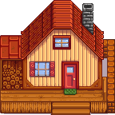
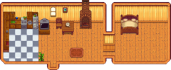
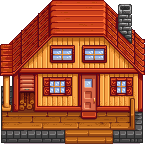
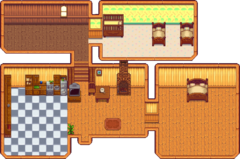
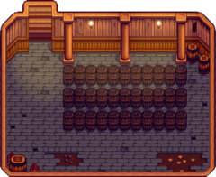

Farmhouse
| Farmhouse | |
 | |
| Closed: | Never |
| Address: | The Farm |
The Farmhouse is the player's permanent residence in Stardew Valley. Initially, it has only one small room that contains a single bed, a fireplace, an old TV (either a Budget TV or Floor TV), various decorations depending on what farm style was chosen, and a floor mat of varying design, which can all be changed and expanded later on. The outer footprint of the farmhouse is a 9×5 rectangle. The inner footprint of the farmhouse without upgrades is a 10×7 rectangle. The fireplace can be moved by left-clicking or turned on by right-clicking on it.
Flooring and Wallpaper can be changed using patterns bought from Pierre's or JojaMart, or fetched from a Catalogue. New furniture (including fireplaces) can be added at any time.
Upgrades can be purchased at the Carpenter's Shop. Each new room added when upgrading can have its own flooring and wallpaper patterns. You can also change the color of the exterior at the Carpenter's Shop.
Upon getting married or having Krobus move in as a roommate, the game automatically adds an extra room that is based on that character's style.
Interior
Upgrades
Robin requires three days to complete each farmhouse upgrade.
| Upgrade | Outdoor Image | Indoor Image | Cost | Changes |
|---|---|---|---|---|
| 1 |  |
 |
|
Adds a kitchen, with a kitchen counter that allows cooking, and a fridge that functions as a chest. Items in the fridge can be used when cooking even though they are not in the player's inventory. Adds a bedroom. Upgrades bed from single to double. Allows marriage. |
| 2 |  |
 |
|
Adds two new rooms, one empty, and one with a crib and two child beds, thus allowing the player to have children. Kitchen and bedroom are larger. Unlocks renovations and the ability to paint the house. |
| 3 |  |
Adds a cellar under the house, allowing access via the kitchen. The cellar houses casks which can age products such as cheese and wine to increase quality and value. The cellar comes with 33 casks, though it may house as many as 189 casks. |
Renovations
After upgrading the farmhouse for the 2nd time, Robin offers house renovations. Renovations are completed instantly. All renovations can be refunded in full amount at any time, provided that the expanded area isn't occupied. Refunds also complete instantly.
| Renovation | Image | Cost | Comments |
|---|---|---|---|
| Remove crib | Free | Prevents player from having additional children | |
| Open bedroom | |||
| Add southern room | |||
| Add corner room | |||
| Expand corner room | |||
| Add Attic | |||
| Cubby | |||
| Dining room | |||
| Open dining room |
Spouse/Roommate Rooms
Note that Emily's parrot will not be visible to anyone in multiplayer who has not seen her 4 heart event.
Achievements
There are 2 Achievements related to completing Farmhouse upgrades.
- Moving Up (Upgrade the house one time)
- Living Large (Upgrade the house two times)
Note that there are no achievements for upgrading the farmhouse the third time (which adds the cellar) or for purchasing any renovations.
Notes
- The magnifying glass icon over the woodpile at the left of the farmhouse is related to "The Mysterious Qi" Quest.
- Instead of gathering 450 wood for the Farmhouse Upgrade 1, it can all be purchased at the Carpenter's Shop during year 1 for
 4,500g, or during year 2+ for 22,500g. The total cost for the upgrade would then be 14,500g in year 1, or 32,500g in year 2+.
4,500g, or during year 2+ for 22,500g. The total cost for the upgrade would then be 14,500g in year 1, or 32,500g in year 2+. - The kitchen sink can be used to refill the player's watering can.
History
- 1.0: Introduced.
- 1.1: Added unique rooms for Shane and Emily when married. Introduced cellar house upgrade. Players can now apply wallpaper to hallways inside upgraded homes.
- 1.3.27: Hill-top and Wilderness farmhouses come with a Stone Fireplace instead of a Brick Fireplace. Fireplaces are now moveable furniture.
- 1.4: Added unique room for Krobus when he becomes the player's roommate.
- 1.5: Added the option to move beds. Added House Renovations.
- 1.6: Added four new home renovations: dining room, attic, expanded corner room, and cubby. Most renovations now cost money. Added the option to move the farmhouse. Changed cost of the second house upgrade from 50,000g and 150 Hardwood to 65,000g and 100 Hardwood.
| Buildings | ||
|---|---|---|
| Merchants | Abandoned House • Adventurer's Guild • Blacksmith • Bookseller • Carpenter's Shop • Casino • Desert Trader • Fish Shop • Giant Stump • Harvey's Clinic • Ice Cream Stand • Island Trader • JojaMart • Marnie's Ranch • Oasis • Pierre's General Store • Qi's Walnut Room • The Stardrop Saloon • Traveling Cart • Volcano Dwarf • Wizard's Tower | |
| Houses | 1 River Road • 2 River Road • 1 Willow Lane • 2 Willow Lane • 24 Mountain Road • Elliott's Cabin • Farmhouse • Island Farmhouse • Leah's Cottage • Mayor's Manor • Tent • Trailer • Treehouse | |
| Farm Buildings | Farming | Barn • Cabin • Coop • Fish Pond • Greenhouse • Mill • Pet Bowl • Shed • Silo • Slime Hutch • Stable • Well |
| Special | Desert Obelisk • Earth Obelisk • Farm Obelisk • Gold Clock • Island Obelisk • Junimo Hut • Water Obelisk | |
| Other Buildings | Community Center • Dog Pen • Island Field Office • Joja Warehouse • Movie Theater • Museum • Spa • Witch's Hut | |